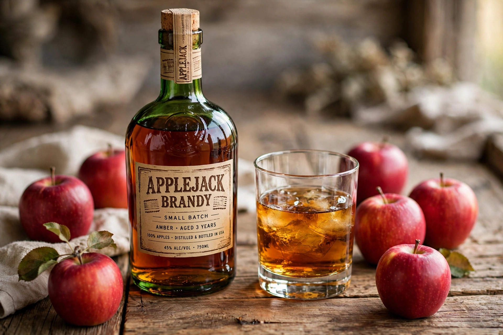

Applejack is a strong alcoholic drink produced from apples. Popular in the American colonial era, the drink's prevalence declined in the 19th and 20th centuries amid competition from other spirits, but has experienced a revival in the 21st century. It is produced by various means, including fractional freezing (traditionally called "jacking") of hard cider and conventional distillation.

| Applejack | |
| Type | Fruit brandy |
|---|---|
| Origin | United States (colonial era) |
| Ingredients | Apples (fermented cider) |
| Alcohol by volume | Typically 30–40% (distilled); freeze-jacked cider could reach 25–30% |
Applejack was traditionally produced in colonial New Jersey and other apple-growing regions. In 1780, William Laird established America's first commercial applejack distillery in New Jersey; the Laird family enterprise claims descent from a Scottish immigrant who arrived in the 1690s and is often cited as the United States' oldest licensed distillery lineage. Applejack served as a form of currency in colonial times — it was reportedly used to pay road-building crews, giving rise to the term "jersey lightning" for its potency.
Traditionally, applejack was made by leaving barrels of hard cider outdoors in winter; the water froze into ice that was removed, concentrating the alcohol in the remaining liquid — hence "jacking." Because freeze concentration also concentrates methanol and fusel oils, the resulting drink could cause severe hangovers or worse ("apple palsy"). Modern commercial applejack is distilled and is often a blend of apple brandy and neutral grain spirit, a category formalized in U.S. federal regulations in the 1960s.